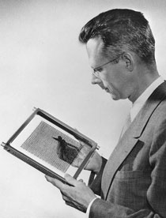
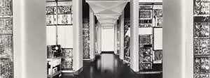
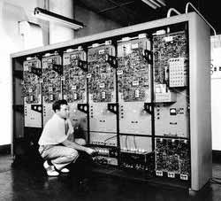

Introduction
Alors que l'informatique est née au milieu des années 1940 aux Etats-Unis, le développement de ses applications graphiques en temps réel commence en 1946 au Massachusetts Institute of technology (MIT) avec le Whirlwind qui est le premier ordinateur à posséder un système d'affichage graphique en temps réel (écran à tube cathodique). Le Gouvernement américain finance le projet dès 1944 pour des objectifs de défense nationale.
Le Whirlwind est certes le premier ordinateur numérique du MIT, mais il est surtout :
le premier ordinateur numérique construit spécifiquement pour le contrôle en temps réel ;
le premier ordinateur avec un affichage graphique ;
le premier ordinateur à utiliser la mémoire à tores.
Première période (1944-1951) : Fin de la 2ème guerre mondiale et début de la guerre de Corée - Le Whirlwind doit fonctionner dans les simulateurs de vol comme mécanisme de contrôle en temps réel
A la fin des années 1944, sur mandat de la Marine américaine (au Centre des engins spéciaux), des chercheurs du Massachusetts Institute of technology (MIT) dirigés par Jay Wright Forrester (jeune ingénieur du Nebraska) travaillent au développement d'ASCA, un ordinateur analogique devant être intégré à un simulateur de vol polyvalent pour entrainer les équipages des bombardiers. Le système doit être capable de mettre à jour, en continu, un tableau de bord simulé sur la base des commandes entrées par les pilotes et du comportement de l'avion. Pour faire fonctionner le simulateur dans des conditions réalistes, il faut résoudre simultanément, et en temps réel, de nombreuses équations comportant plus d'une centaine de variables. Après une année de travaille les chercheurs réalisent que la tâche est d'une complexité insurmontable pour ASCA.

Jay Forrester, inventeur de la mémoire à tores magnétiques, tenant un plan de mémoire de 64 x 64.
Picture used with the permission of the MITRE Corporation.
Copyright © The Mitre Corporation. All Rights reserved.
Le projet analogique doit être abandonné et doit évoluer de façon radicale. Jerry Crawford, membre de l'équipe, montra sur un ordinateur travaillant en mode batch (l'ENIAC), c'est à dire par lots en temps diffféré, que ces difficultés pouvaient êtres surmontées avec un ordinateur numérique.

Vue large de la salle du Whirlwind I pleinement opérationnel (27 septembre 1951).
Picture used with the permission of the MITRE Corporation.
Copyright © The Mitre Corporation. All Rights reserved.
Ainsi sur cette base, en juin 1946, Jay Forrester s'oriente vers la conception d'un véritable calculateur électronique et digital, un ordinateur numérique, le Whirlwind. Pour répondre aux exigences de la marine, le Whirlwind doit fonctionner dans les simulateurs de vol comme mécanisme de contrôle en temps réel.
Une nouvelle forme d'ingénierie numérique, basée sur des traitements et des actions en temps réel, allait naître. L'équipe chargée de construire le Whirlwind est dirigée par Jay Forrester, entouré de Charles W. Adams, Robert Evereet et Ken Olsen. Charles W. Adams, Robert Evereet et Ken Olsen. La conception et la construction durèrent de 1946 à 1955 et connurent plusieurs évolutions profondes. La recherche de la performance, de la fiabilité et de la rapidité de réponse dans cet ordinateur ont amené de grands progrès en informatique. La construction a commencé avec une équipe de 175 personnes, y compris 70 du personnel technique.
Première pièce du puzzle du « Desktop-DAO »
A ce stade du développement, le Whirlwind met en place la première pièce du puzzle de l'interface utilisateur graphique (Desktop) et du Dessin Assisté par Ordinateur (DAO) modernes : un tube cathodique capable d'afficher des graphiques en temps réel.
Le Whirlwind 1 était une machine encombrante :
Ayant démontré ses qualités de vitesse, d'exactitude et de fiabilité en temps réel, le multiplicateur à cinq chiffres était un pas en avant de géant. Le célèbre mathématicien de Princeton, John Von Neumann, qui développait également un ordinateur pour ONR, a visité le MIT en 1948 peu de temps après que le multiplicateur ait accompli 5 milliards de multiplications sans erreur.

Norman Taylor examine le Multiplicateur à 5 digits du Whirlwind (21 0ctobre 1948)
Picture used with the permission of the MITRE Corporation.
Copyright © The Mitre Corporation. All Rights reserved.
En voyant la machine fonctionner, il est devenu tellement excité qu'il a embrassé Norman Taylor sur les deux joues.
- Premier étage: L'unité centrale, le pupitre de contrôle, les écrans cathodiques occupaient le premier étage de l'immeuble Barta. Les machines occupaient une superficie de 300 m2 et étaient disposées dans des armoires alignées le long de nombreux couloirs de 3 mètres de haut, quant au multiplicateur à 5 digits, c'était une armoire d'environ 2 mètres de haut sur 3 mètres de large.
- Rez-de-chaussée : La mémoire auxiliaire sur tambours magnétiques, les bandes magnétiques et les dispositifs de télécommunication occupaient le rez-de-chaussée.
- Sous-sol : Il accueillait les génératrices électriques d'une puissance de 150 kW.
- Toit : Le toit du bâtiment était couvert par l'installation de climatisation.